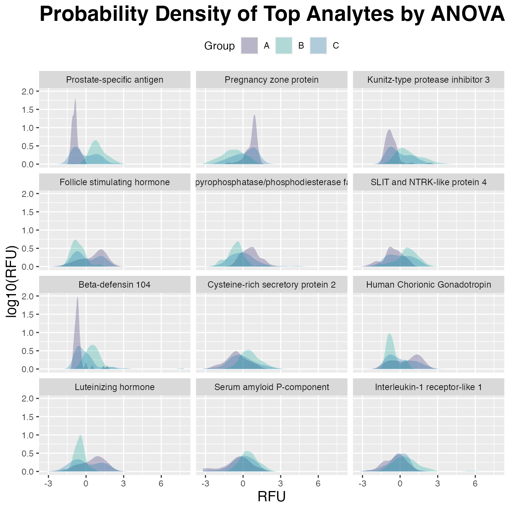

ANOVA Three-Group Analysis
Stu Field, Standard BioTools, Inc.
Source:vignettes/articles/stat-three-group-analysis-anova.Rmd
stat-three-group-analysis-anova.RmdDifferential Expression via ANOVA
Although targeted statistical analyses are beyond the scope of the
SomaDataIO package, below is an example analysis that
typical users/customers would perform on ‘SomaScan’ data.
It is not intended to be a definitive guide in statistical analysis
and existing packages do exist in the R ecosystem that
perform parts or extensions of these techniques. Many variations of the
workflow below exist, however the framework highlights how one could
perform standard preliminary analyses on ‘SomaScan’ data.
Data Preparation
# the `example_data` .adat object
# download from `SomaLogic-Data` repo or directly via bash command:
# `wget https://raw.githubusercontent.com/SomaLogic/SomaLogic-Data/main/example_data.adat`
# then read in to R with:
# example_data <- read_adat("example_data.adat")
dim(example_data)
#> [1] 192 5318
table(example_data$SampleType)
#>
#> Buffer Calibrator QC Sample
#> 6 10 6 170
# prepare data set for analysis using `preProcessAdat()`
cleanData <- example_data |>
preProcessAdat(
filter.features = TRUE, # rm non-human protein features
filter.controls = TRUE, # rm control samples
filter.qc = TRUE, # rm non-passing qc samples
log.10 = TRUE, # log10 transform
center.scale = TRUE # center/scale analytes
)
#> ✔ 305 non-human protein features were removed.
#> → 214 human proteins did not pass standard QC
#> acceptance criteria and were flagged in `ColCheck`. These features
#> were not removed, as they still may yield useful information in an
#> analysis, but further evaluation may be needed.
#> ✔ 6 buffer samples were removed.
#> ✔ 10 calibrator samples were removed.
#> ✔ 6 QC samples were removed.
#> ✔ 2 samples flagged in `RowCheck` did not
#> pass standard normalization acceptance criteria (0.4 <= x <= 2.5)
#> and were removed.
#> ✔ RFU features were log-10 transformed.
#> ✔ RFU features were centered and scaled.
# drop any missing values in Sex
cleanData <- cleanData |>
drop_na(Sex) # rm NAs if present
# dummy 3 group setup
# set up semi-random 3-group with structure
# based on the `Sex` variable (with known structure)
cleanData$Group <- ifelse(cleanData$Sex == "F", "A", "B")
g3 <- withr::with_seed(123, sample(1:nrow(cleanData), size = round(nrow(cleanData) / 3)))
cleanData$Group[g3] <- "C"
table(cleanData$Group)
#>
#> A B C
#> 55 57 56Compare Three Groups
(A/B/C)
Get annotations via getAnalyteInfo():
aov_tbl <- getAnalyteInfo(cleanData) |>
select(AptName, SeqId, Target = TargetFullName, EntrezGeneSymbol, UniProt)
# Feature data info:
# Subset via dplyr::filter(aov_tbl, ...) here to
# restrict analysis to only certain analytes
aov_tbl
#> # A tibble: 4,979 × 5
#> AptName SeqId Target EntrezGeneSymbol UniProt
#> <chr> <chr> <chr> <chr> <chr>
#> 1 seq.10000.28 10000-28 Beta-crystallin B2 CRYBB2 P43320
#> 2 seq.10001.7 10001-7 RAF proto-oncogene… RAF1 P04049
#> 3 seq.10003.15 10003-15 Zinc finger protei… ZNF41 P51814
#> 4 seq.10006.25 10006-25 ETS domain-contain… ELK1 P19419
#> 5 seq.10008.43 10008-43 Guanylyl cyclase-a… GUCA1A P43080
#> 6 seq.10011.65 10011-65 Inositol polyphosp… OCRL Q01968
#> 7 seq.10012.5 10012-5 SAM pointed domain… SPDEF O95238
#> 8 seq.10014.31 10014-31 Zinc finger protei… SNAI2 O43623
#> 9 seq.10015.119 10015-119 Voltage-gated pota… KCNAB2 Q13303
#> 10 seq.10022.207 10022-207 DNA polymerase eta POLH Q9Y253
#> # ℹ 4,969 more rowsCalculate ANOVAs
Use a “list columns” approach via nested tibble object using
dplyr, purrr, and
stats::aov()
aov_tbl <- aov_tbl |>
mutate(
formula = map(AptName, ~ as.formula(paste(.x, "~ Group"))), # create formula
aov_model = map(formula, ~ stats::aov(.x, data = cleanData)), # fit ANOVA-models
aov_smry = map(aov_model, summary) |> map(1L), # summary() method
F.stat = map(aov_smry, "F value") |> map_dbl(1L), # pull out F-statistic
p.value = map(aov_smry, "Pr(>F)") |> map_dbl(1L), # pull out p-values
fdr = p.adjust(p.value, method = "BH") # FDR multiple testing
) |>
arrange(p.value) |> # re-order by `p-value`
mutate(rank = row_number()) # add numeric ranks
# View analysis tibble
aov_tbl
#> # A tibble: 4,979 × 12
#> AptName SeqId Target EntrezGeneSymbol UniProt formula aov_model
#> <chr> <chr> <chr> <chr> <chr> <list> <list>
#> 1 seq.8468.… 8468… Prost… KLK3 P07288 <formula> <aov>
#> 2 seq.6580.… 6580… Pregn… PZP P20742 <formula> <aov>
#> 3 seq.7926.… 7926… Kunit… SPINT3 P49223 <formula> <aov>
#> 4 seq.3032.… 3032… Folli… CGA FSHB P01215… <formula> <aov>
#> 5 seq.16892… 1689… Ecton… ENPP2 Q13822 <formula> <aov>
#> 6 seq.7139.… 7139… SLIT … SLITRK4 Q8IW52 <formula> <aov>
#> 7 seq.5763.… 5763… Beta-… DEFB104A Q8WTQ1 <formula> <aov>
#> 8 seq.9282.… 9282… Cyste… CRISP2 P16562 <formula> <aov>
#> 9 seq.4914.… 4914… Human… CGA CGB P01215… <formula> <aov>
#> 10 seq.2953.… 2953… Lutei… CGA LHB P01215… <formula> <aov>
#> # ℹ 4,969 more rows
#> # ℹ 5 more variables: aov_smry <list>, F.stat <dbl>, p.value <dbl>,
#> # fdr <dbl>, rank <int>Visualize with ggplot2()
Create a plotting tibble in the “long” format for
ggplot2:
target_map <- head(aov_tbl, 12L) |> # mapping table
select(AptName, Target) # SeqId -> Target
plot_tbl <- cleanData |>
select(Group, target_map$AptName) |> # top 12 analytes
pivot_longer(cols = -Group, names_to = "AptName", values_to = "RFU") |>
left_join(target_map, by = "AptName") |>
# order factor levels by 'aov_tbl' rank to order plots below
mutate(Target = factor(Target, levels = target_map$Target))
plot_tbl
#> # A tibble: 2,016 × 4
#> Group AptName RFU Target
#> <chr> <chr> <dbl> <fct>
#> 1 A seq.8468.19 -1.06 Prostate-specific antigen
#> 2 A seq.6580.29 0.298 Pregnancy zone protein
#> 3 A seq.7926.13 -1.08 Kunitz-type protease inhibitor 3
#> 4 A seq.3032.11 0.398 Follicle stimulating hormone
#> 5 A seq.16892.23 1.53 Ectonucleotide pyrophosphatase/phosphodie…
#> 6 A seq.7139.14 -0.750 SLIT and NTRK-like protein 4
#> 7 A seq.5763.67 -0.634 Beta-defensin 104
#> 8 A seq.9282.12 -1.12 Cysteine-rich secretory protein 2
#> 9 A seq.4914.10 1.74 Human Chorionic Gonadotropin
#> 10 A seq.2953.31 -0.425 Luteinizing hormone
#> # ℹ 2,006 more rows
plot_tbl |>
ggplot(aes(x = RFU, fill = Group)) +
geom_density(linetype = 0, alpha = 0.25) +
scale_fill_manual(values = c("#24135F", "#00A499", "#006BA6")) +
facet_wrap(~ Target, ncol = 3) +
ggtitle("Probability Density of Top Analytes by ANOVA") +
labs(y = "log10(RFU)") +
theme(plot.title = element_text(size = 21, face = "bold"),
axis.title.x = element_text(size = 14),
axis.title.y = element_text(size = 14),
legend.position = "top"
)